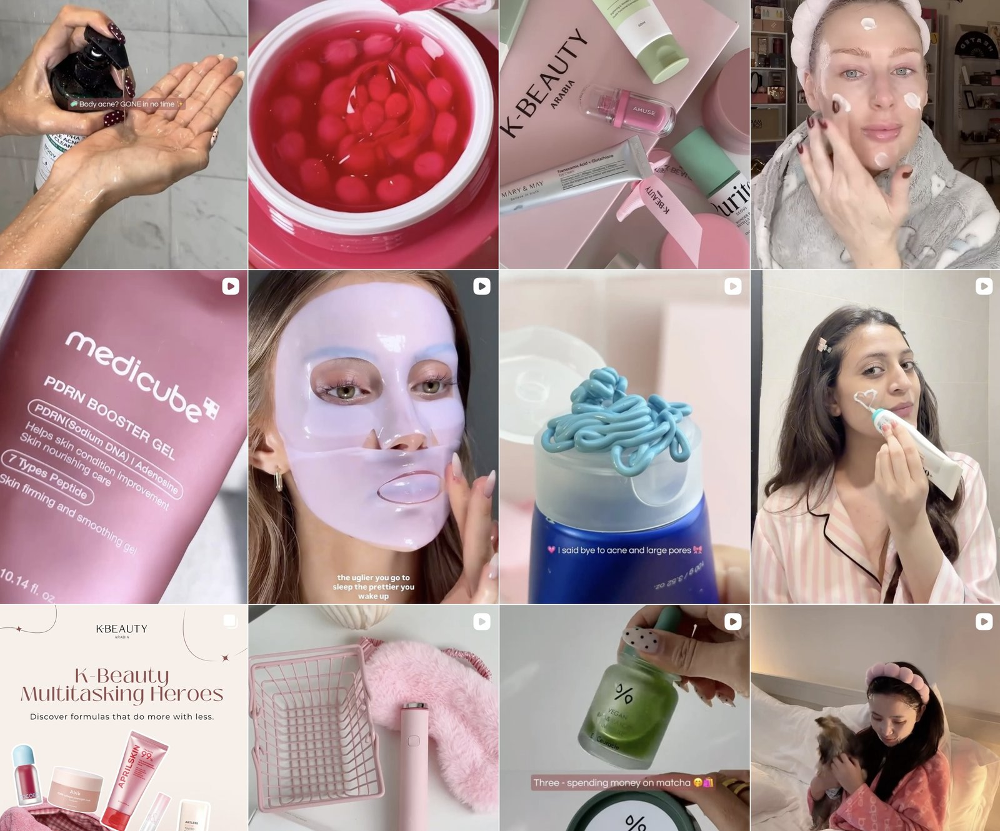
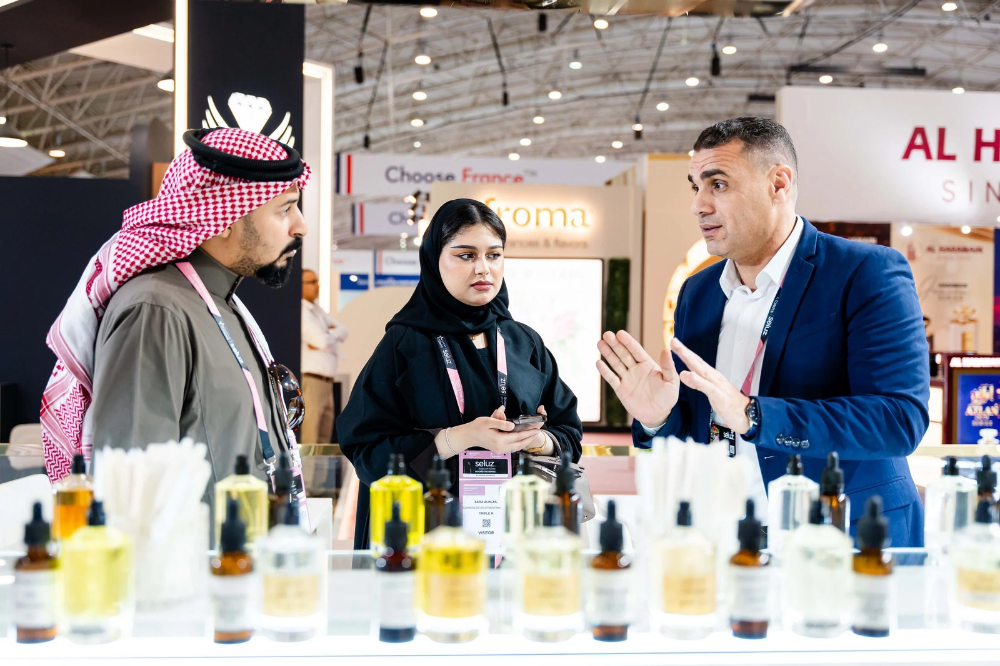
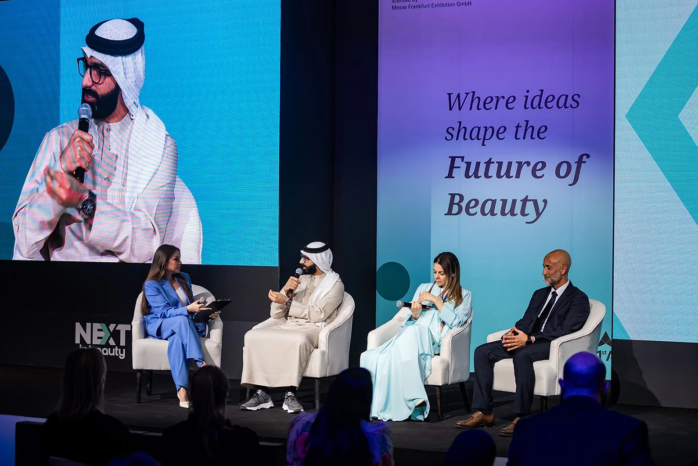

한류 확산 이후 형성된 한국 뷰티 관심
사우디아라비아에서 한국 스킨케어에 대한 관심은 한국 드라마와 케이팝을 통해 형성되기 시작했다. 드라마와 음악을 통해 노출된 배우와 아이돌의 피부 관리 방식은 자연스럽게 뷰티와 라이프 스타일에 대한 관심으로 이어졌고, 이는 한국 화장품에 대한 호기심과 소비로 확장되는 계기로 작용했다. 특히 세럼·수분 크림·멀티밤 등 실용적인 기초화장품이 현지 온라인 쇼핑몰과 플랫폼을 중심으로 꾸준히 소비되고 있다.
더불어 사우디의 강한 자외선과 건조한 기후 환경 속에서 보습과 피부 진정을 중시하는 한국식 스킨케어 방식은 현지 소비자들의 피부 관리 습관과 자연스럽게 맞물리며 긍정적인 반응을 얻고 있다. 또한 사우디의 수질 특성과 강한 자외선 환경으로 인해 헤어케어에 대한 관심 역시 높은 편이다. 특히 탈모 예방이나 두피 관리와 관련된 세럼·오일 등 기능성 제품에 대해 통신원에게 직접 문의하거나 일상적인 대화 속에서 관심을 보이는 사례도 관찰된다.
소비 기준과 시장 환경의 변화
한국 화장품에 대한 관심은 제품 선택 기준에서도 드러난다. 할랄(halal) 인증 여부와 성분의 안전성, 저자극 포뮬러에 대한 정보는 현지에서 소비자 신뢰도를 높이는 중요한 요소로 작용하고 있으며, 성분을 중심으로 제품을 비교·선택하는 소비 경향도 점차 확산되고 있다. 특히 사우디는 소셜 미디어 이용률이 매우 높은 편으로, 뷰티·라이프스타일 트렌드에 대한 노출과 확산 속도가 빠른 시장으로 해석된다.

▲ 사우디아라비아 기반 한국 뷰티 마케팅 — 출처: 케이뷰티 아라비아(K-Beauty Arabia) 공식 인스타그램(@kbeautyarabia)
일부 시장 분석에서는 사우디아라비아를 포함한 중동 지역에서 한국 뷰티 제품에 대한 수요가 확대되고 있으며, 특히 스킨케어 중심의 소비가 향후 성장 가능성을 지닌 분야로 언급되고 있다. 시장 조사 기관 아이마크 그룹(IMARC Group) 역시 사우디아라비아 화장품 시장을 중동 지역 내 성장 잠재력이 높은 시장으로 평가하며, 젊은 연령층 비중이 높은 인구 구성과 온라인 소비 환경의 확산, 기후적 요인이 스킨케어 수요를 견인하고 있다고 분석한다.
산업 접점과 유통의 한계
매년 개최되는 '뷰티월드 사우디아라비아(Beautyworld Saudi Arabia)'는 사우디 및 GCC(걸프 협력 회의) 지역 최대 규모의 뷰티 산업 박람회로, 글로벌 화장품 브랜드와 현지 바이어들이 한자리에 모여 시장 동향을 공유하는 장으로 기능한다. 이 같은 국제 박람회는 사우디 뷰티 시장의 성장 가능성을 보여주는 동시에, 해외 브랜드들이 현지 시장과의 접점을 모색하는 계기로 작용하고 있다. 올해 4월에 개최된 해당 행사에는 한국 브랜드도 참여한 바 있으며 2026년 5월에 다시 개최될 예정이다.


▲ 2025 뷰티월드 사우디아라비아(Beautyworld Saudi Arabia) 행사 — 출처: 뷰티월드 사우디아라비아 공식 홈페이지
다만 현재 사우디 내에서 한국 화장품은 주로 온라인 플랫폼이나 멀티 브랜드 유통 채널을 통해 유통되고 있으며, 브랜드 단위의 상시 단독 매장은 아직 제한적인 상황이다. 이로 인해 한국에서는 널리 알려진 화장품이라 하더라도 현지에서는 구매처를 찾기 어려운 경우가 적지 않다. 일부 소비자들은 현지에서 구매가 어려운 특정 브랜드의 화장품을 해외 배송을 통해 구입하고 있으나, 한국어 기반의 구매 환경은 비 한국어 사용자에게 또 다른 장벽으로 작용하고 있다. 이러한 상황을 고려할 때, 현지 소비자의 접근성을 높이기 위한 공식 매장 등 오프라인 유통 채널의 확충과 함께 보다 다양한 한국 화장품 브랜드를 접할 수 있는 환경 조성의 필요성도 함께 제기된다.
아울러 사우디아라비아로 수입되는 대부분의 상품에는 15%의 부가가치세(VAT)가 부과되며, 화장품의 경우 상업적 목적의 정식 관세가 추가로 적용될 수 있다. 이러한 유통 및 수입 구조는 해외 직구뿐만 아니라 정식 유통을 통한 판매 과정에서도 비용 부담으로 작용할 가능성이 있으며, 소비자 체감 가격에도 영향을 미칠 수 있어 향후 시장 확대 과정에서 가격 경쟁력에 대한 고려가 필요할 것으로 보인다.
사진 출처 및 참고자료
딥 마켓 인사이츠(Deep Market Insights). Saudi Arabia K-Beauty Products Market Size & Outlook, 2025–2033.
아이마크 그룹(IMARC Group). Saudi Arabia Skincare Market Size, Share, Trends and Forecast by Category, Ingredient Type, Gender, Distribution Channel, and Region, 2025–2033.
켄 리서치(Ken Research) (2025. 10). KSA K-Beauty Products Market Report Size, Share, Growth Drivers, Trends, Opportunities & Forecast 2025–2030.
《뷰티 매터(Beauty Matter)》(2025. 10. 12). K-Beauty Powerhouse Korea Town Expands Across the Gulf, beautymatter.com
《데이터 리포털(Data Reportal)》(2025. 03. 03). Digital 2025: Saudi Arabia, datareportal.com
뷰티월드 사우디아라비아(Beautyworld Saudi Arabia) 공식 웹사이트, beautyworld-saudi-arabia.com
케이뷰티 아라비아(K-Beauty Arabia) 공식 인스타그램(@kbeautyarabia), instagram.com/kbeautyarabia